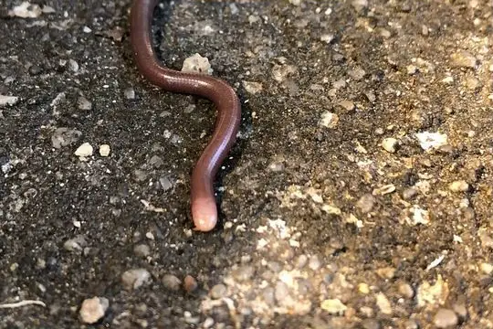

Indotyphlops
The genus Indotyphlops (family Typhlopidae) has 22 living species in SnakeList (none venomous), recorded in 34 countries (+5 territories).
- 22living species
- 22non-venomous
- 34countries
About the genus
A genus of the family Typhlopidae (blind snakes).
Species
Showing 22 species
- No photo yetBelgaum Worm SnakeIndotyphlops exiguus
 Brahminy BlindsnakeIndotyphlops braminus
Brahminy BlindsnakeIndotyphlops braminus- No photo yetChestnut Worm SnakeIndotyphlops tenebrarum
- No photo yetDarjeeling Worm SnakeIndotyphlops meszoelyi
- No photo yetFile Worm SnakeIndotyphlops filiformis
- No photo yetFletcher's Worm SnakeIndotyphlops fletcheri
- No photo yetHong Kong Blind SnakeIndotyphlops lazelli
- No photo yetJerdon's Worm SnakeIndotyphlops jerdoni
- No photo yetLong Worm SnakeIndotyphlops longissimus
- No photo yetLoveridge's Worm SnakeIndotyphlops loveridgei
- No photo yetMalcolm's Worm SnakeIndotyphlops malcolmi
- No photo yetPied Worm SnakeIndotyphlops leucomelas
- No photo yetSamagutin Worm SnakeIndotyphlops tenuicollis
- No photo yetSchmutz's Worm SnakeIndotyphlops schmutzi
 Slender Worm SnakeIndotyphlops porrectus
Slender Worm SnakeIndotyphlops porrectus- No photo yetSouth India Worm SnakeIndotyphlops pammeces
- No photo yetSri Lanka Worm SnakeIndotyphlops lankaensis
- No photo yetVedda Worm SnakeIndotyphlops veddae
- No photo yetViolet Worm SnakeIndotyphlops violaceus

White-headed Blind SnakeIndotyphlops albiceps- No photo yetIndotyphlops ahsanai
- No photo yetIndotyphlops madgemintonae
No snakes in Indotyphlops match.
About the genus Indotyphlops
- Distribution: living species recorded in 34 countries (+5 territories), on 4 continents: Africa, Asia, North America, Oceania.
- Family: Typhlopidae.
- Countries and territories: American Samoa, Bangladesh, Benin, Bhutan, Cameroon, Central African Republic, China, Comoros, Democratic Republic of the Congo, Egypt, Equatorial Guinea, Gabon, Guam, India, Indonesia, Ivory Coast, Laos, Libya, Madagascar, Malaysia, Maldives, Mauritania, Mauritius, Mozambique, Myanmar, Nepal, Northern Mariana Islands, Pakistan, Puerto Rico, Samoa, Senegal, Seychelles, Somalia, South Africa, Sri Lanka, Tanzania, Thailand, US Virgin Islands, United States.
Compare its species
Its living species side by side. Lengths come only from SnakeList’s reviewed, sourced accounts; the others are left blank rather than guessed.
| Species | Venom | Recorded in | Adult length (reviewed accounts) |
|---|---|---|---|
| Belgaum Worm Snake Indotyphlops exiguus | Non-venomous | 1 country (Asia) | No reviewed account yet |
| Brahminy Blindsnake Indotyphlops braminus | Non-venomous | 22 countries (+5 territories) (Africa, Asia, North America, Oceania) | Tiny: about 5 to 10 cm, rarely 15 cm |
| Chestnut Worm Snake Indotyphlops tenebrarum | Non-venomous | 1 country (Asia) | No reviewed account yet |
| Darjeeling Worm Snake Indotyphlops meszoelyi | Non-venomous | 1 country (Asia) | No reviewed account yet |
| File Worm Snake Indotyphlops filiformis | Non-venomous | No country recorded (Asia) | No reviewed account yet |
| Fletcher's Worm Snake Indotyphlops fletcheri | Non-venomous | 1 country (Asia) | No reviewed account yet |
| Hong Kong Blind Snake Indotyphlops lazelli | Non-venomous | 1 country (Asia) | No reviewed account yet |
| Jerdon's Worm Snake Indotyphlops jerdoni | Non-venomous | 5 countries (Asia) | No reviewed account yet |
| Long Worm Snake Indotyphlops longissimus | Non-venomous | 1 country (Asia) | No reviewed account yet |
| Loveridge's Worm Snake Indotyphlops loveridgei | Non-venomous | 1 country (Asia) | No reviewed account yet |
| Malcolm's Worm Snake Indotyphlops malcolmi | Non-venomous | 1 country (Asia) | No reviewed account yet |
| Pied Worm Snake Indotyphlops leucomelas | Non-venomous | 1 country (Asia) | No reviewed account yet |
| Samagutin Worm Snake Indotyphlops tenuicollis | Non-venomous | 2 countries (Asia) | No reviewed account yet |
| Schmutz's Worm Snake Indotyphlops schmutzi | Non-venomous | 1 country (Asia) | No reviewed account yet |
| Slender Worm Snake Indotyphlops porrectus | Non-venomous | 2 countries (Asia) | No reviewed account yet |
| South India Worm Snake Indotyphlops pammeces | Non-venomous | 2 countries (Asia) | No reviewed account yet |
| Sri Lanka Worm Snake Indotyphlops lankaensis | Non-venomous | 1 country (Asia) | No reviewed account yet |
| Vedda Worm Snake Indotyphlops veddae | Non-venomous | 1 country (Asia) | No reviewed account yet |
| Violet Worm Snake Indotyphlops violaceus | Non-venomous | 1 country (Asia) | No reviewed account yet |
| White-headed Blind Snake Indotyphlops albiceps | Non-venomous | 6 countries (Asia) | No reviewed account yet |
| Indotyphlops ahsanai | Non-venomous | 1 country (Asia) | No reviewed account yet |
| Indotyphlops madgemintonae | Non-venomous | 1 country (Asia) | No reviewed account yet |